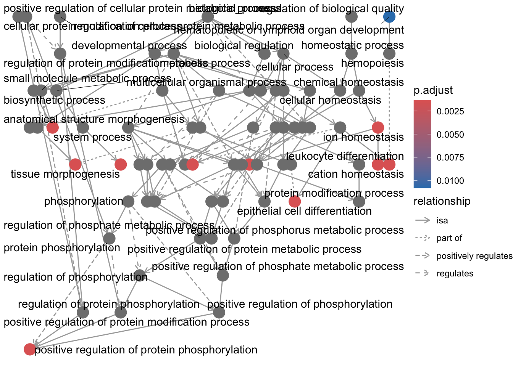
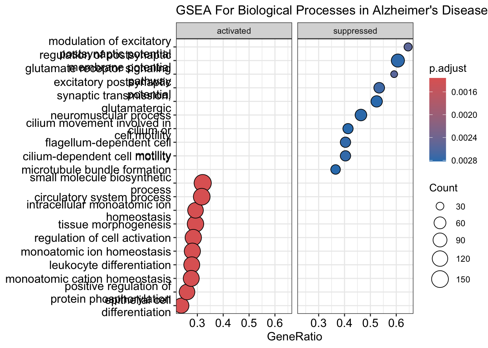
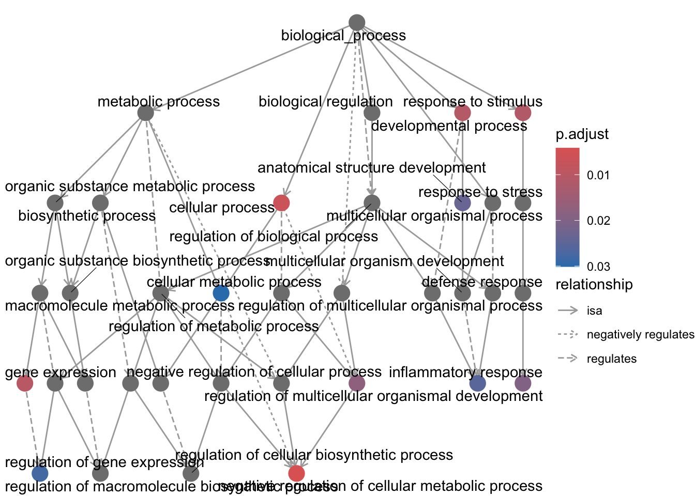
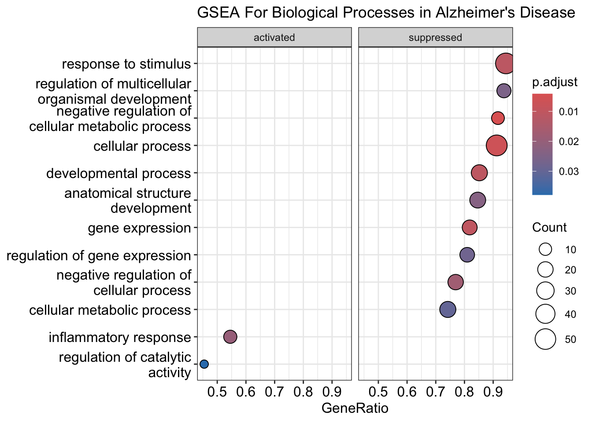
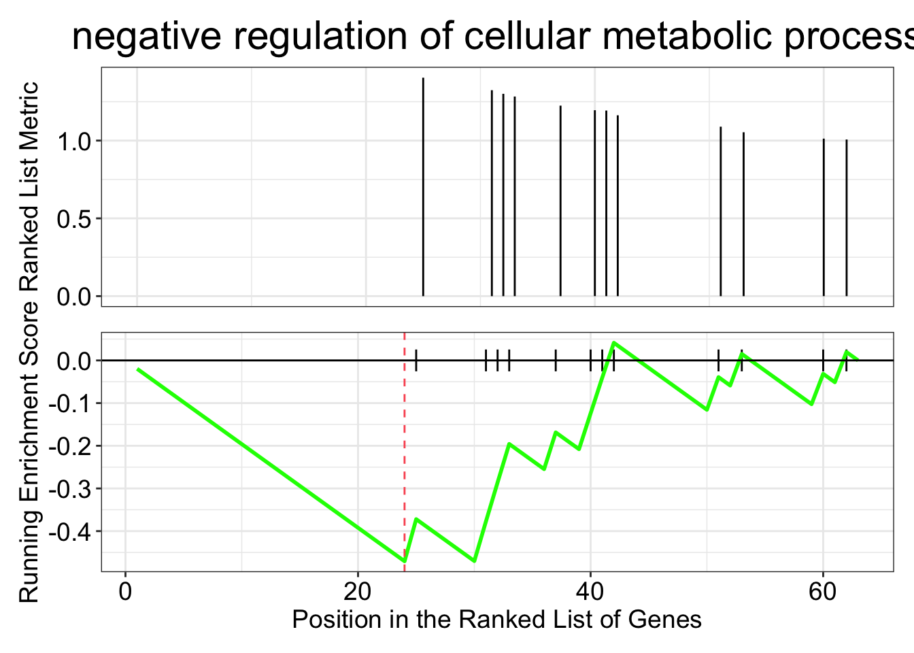
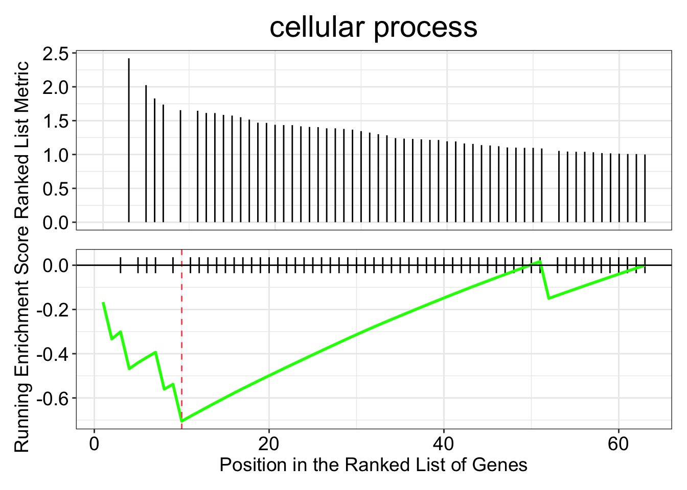

Code
#if (!require("BiocManager", quietly = TRUE))
# install.packages("BiocManager")
#BiocManager::install("RCy3")#if (!require("BiocManager", quietly = TRUE))
# install.packages("BiocManager")
#BiocManager::install("RCy3")# Libraries we need
libs <- c(
"tidyverse", "readxl", "limma", "ggrepel", "magrittr", "kableExtra",
"patchwork", "DT", "tidymodels", "ggbeeswarm", "gt", "skimr", "GGally",
"visdat", "corrr", "ggsignif", "vip", "themis", "keras", "xgboost", "kknn",
"tensorflow", "xlsx", "HDAnalyzeR", "plotly", "umap", "uwot", "ggplotify",
"cowplot", "ggvenn", "UpSetR", "ComplexUpset", "DESeq2", "pheatmap", "randomForest",
"caret", "edgeR", "STRINGdb", "igraph", "clusterProfiler", "org.Hs.eg.db", "enrichplot",
"egg", "RCy3", "RColorBrewer"
)
# Install missing libraries
installed_libs <- libs %in% rownames(installed.packages())
if (any(installed_libs == FALSE)) {
install.packages(libs[!installed_libs])
}
# Load libraries
invisible(lapply(libs, library, character.only = TRUE))# Load gene expression count data
count_data <- read.table("data/GSE53697_RNAseq_AD.txt", header = TRUE, sep = "\t", row.names = 1) %>%
dplyr::select(matches("_raw$"))# Round counts to integers
count_data_filtered <- count_data %>%
dplyr::select(starts_with("C"), starts_with("A")) %>%
mutate_all(~round(.))count_data_filtered <- count_data
genes_before_filtering <- nrow(count_data_filtered)
cat("Number of genes before filtering:", genes_before_filtering, "\n")Number of genes before filtering: 19185 dge <- DGEList(counts = count_data_filtered)
# dge <- calcNormFactors(dge)
meanLog2CPM <- rowMeans(log2(cpm(dge) + 1))
hist(meanLog2CPM, main = "Histogram of Mean Log2 CPM", xlab = "Mean Log2 CPM")
count_data_filtered <- count_data_filtered[meanLog2CPM > 1, ]
genes_after_filtering <- nrow(count_data_filtered)
cat("Number of genes after filtering:", genes_after_filtering, "\n")Number of genes after filtering: 14950 sample_conditions <- data.frame(
sample = colnames(count_data_filtered),
condition = ifelse(grepl("^C", colnames(count_data_filtered)), "HC", "AD"),
batch = c(0, 0, 0, 1, 1, 1, 1, 1, 0, 0, 0, 1, 1, 1, 1, 1, 1) # Manually adding batch information
)dge <- DGEList(counts = count_data_filtered)
dge <- calcNormFactors(dge)
# design <- model.matrix(~ condition + batch, data = sample_conditions)
design <- model.matrix(~ condition + factor(batch), data = sample_conditions)
v <- voom(dge, design, plot = TRUE)
head(v$E) C1_raw C2_raw C3_raw C4_raw C5_raw C6_raw C7_raw C8_raw
1 1.666028 3.622681 2.402353 2.242940 2.175301 1.945160 2.220551 2.047241
2 8.171797 7.319737 8.634353 8.026213 9.276020 8.897405 7.848728 7.295732
12 6.987940 2.022997 3.397751 3.657259 6.019456 7.878962 2.560113 3.316176
14 6.421959 6.029584 6.000448 6.510198 5.319996 6.775631 6.584768 6.530001
16 8.762372 8.293814 8.435144 8.724345 7.865274 8.882593 8.895612 8.728100
18 8.144870 7.275008 8.455469 8.478941 8.341384 8.366975 8.453630 8.680521
A9_raw A10_raw A11_raw A12_raw A13_raw A14_raw A15_raw A16_raw
1 1.906348 1.627370 2.073706 2.429696 2.914332 2.243341 2.639876 2.290996
2 8.228932 8.609914 7.917652 8.579893 8.510049 8.863482 8.725027 8.051962
12 4.499693 5.975793 3.873325 6.067364 7.633415 7.161695 5.411179 8.052767
14 6.392968 6.333542 6.492932 6.165991 5.714636 6.341330 6.336129 6.563178
16 8.703734 8.418269 8.892265 8.288686 8.648926 8.520732 8.270540 8.844795
18 8.301662 8.294551 8.288104 8.189206 8.289339 8.255371 8.281214 8.574186
A17_raw
1 2.772543
2 8.536880
12 5.083795
14 6.130582
16 8.484317
18 8.402370hist(v$E, breaks = 50, main = "Distribution of Voom Normalized Counts", xlab = "Voom Normalized Counts")
# dds <- DESeqDataSetFromMatrix(countData = count_data_filtered,
# colData = sample_conditions,
# design = ~ condition + factor(batch))
# Normalize counts using variance stabilizing transformation (vst)
# normCounts <- vst(dds, blind = TRUE)
# assay(normCounts)[1:5, 1:5]
# hist(assay(normCounts), breaks = 50, main = "Distribution of VST Normalized Counts", xlab = "Normalized Counts")count_data_with_symbols <- read.table("data/GSE53697_RNAseq_AD.txt", header = TRUE, sep = "\t", row.names = 1)
gene_symbols <- count_data_with_symbols[, "GeneSymbol", drop = FALSE]
voom_normalized <- as.data.frame(v$E) # Convert v$E to a data frame
voom_normalized$GeneID <- rownames(voom_normalized) # Add GeneID as a column
gene_info_voom <- merge(voom_normalized, gene_symbols, by.x = "GeneID", by.y = "row.names", all.x = TRUE)
gene_info_voom <- gene_info_voom[, c("GeneID", "GeneSymbol", setdiff(names(gene_info_voom), c("GeneID", "GeneSymbol")))]
# write.table(gene_info_voom, file = "voom_normalized.tsv", sep = "\t", quote = FALSE, row.names = FALSE)# sampleDist <- cor(assay(normCounts), method = "spearman")
sampleDist <- cor(v$E, method = "spearman")
sampleColor <- brewer.pal(3, "Accent")[1:2]
names(sampleColor) <- unique(sample_conditions$condition)
pheatmap(sampleDist,
clustering_distance_rows = as.dist(1 - sampleDist),
clustering_distance_cols = as.dist(1 - sampleDist),
annotation_col = data.frame(Condition = sample_conditions$condition, row.names = sample_conditions$sample),
annotation_colors = list(Storage = sampleColor),
main = "Sample Correlation Heatmap by Condition")
# pcaRes <- prcomp(t(assay(normCounts)))
pcaRes <- prcomp(t(v$E))
varExp <- round(pcaRes$sdev^2 / sum(pcaRes$sdev^2) * 100)
pcaDF <- data.frame(
PC1 = pcaRes$x[, 1],
PC2 = pcaRes$x[, 2],
Condition = sample_conditions$condition,
Sample = sample_conditions$sample
)
pcaPlot <- ggplot(
data = pcaDF,
mapping = aes(x = PC1, y = PC2, color = Condition, label = Sample)
) +
geom_point(size = 3) +
geom_text_repel(size = 4) +
labs(x = paste0("PC1 (", varExp[1], " %)") ,
y = paste0("PC2 (", varExp[2], " %)") ,
title = "PCA Plot of Samples") +
theme_minimal() +
theme(axis.text = element_text(size = 12), legend.text = element_text(size = 10)) +
scale_color_manual(values = brewer.pal(3, "Accent")) +
coord_fixed(ratio = 1) # Added fixed ratio to ensure equal scaling between PC1 and PC2
print(pcaPlot)
# Create a heatmap showing Batch 1 and Batch 2 samples separately
sampleDist_batch <- cor(v$E, method = "spearman")
batchColor <- brewer.pal(3, "Set2")[1:2]
names(batchColor) <- unique(sample_conditions$batch)
pheatmap(sampleDist_batch,
clustering_distance_rows = as.dist(1 - sampleDist_batch),
clustering_distance_cols = as.dist(1 - sampleDist_batch),
annotation_col = data.frame(Batch = factor(sample_conditions$batch), row.names = sample_conditions$sample),
annotation_colors = list(Batch = batchColor),
main = "Sample Correlation Heatmap by Batch")
# PCA Plot by Batch
pcaRes_batch <- prcomp(t(v$E))
varExp_batch <- round(pcaRes_batch$sdev^2 / sum(pcaRes_batch$sdev^2) * 100)
pcaDF_batch <- data.frame(
PC1 = pcaRes_batch$x[, 1],
PC2 = pcaRes_batch$x[, 2],
Batch = factor(sample_conditions$batch),
Sample = sample_conditions$sample
)
pcaPlot_batch <- ggplot(
data = pcaDF_batch,
mapping = aes(x = PC1, y = PC2, color = Batch, label = Sample)
) +
geom_point(size = 3) +
geom_text_repel(size = 4) +
labs(x = paste0("PC1 (", varExp_batch[1], " %)"),
y = paste0("PC2 (", varExp_batch[2], " %)"),
title = "PCA Plot of Samples by Batch") +
theme_minimal() +
theme(axis.text = element_text(size = 12), legend.text = element_text(size = 10)) +
scale_color_manual(values = brewer.pal(3, "Set2")) +
coord_fixed(ratio = 1)
print(pcaPlot_batch)
# Remove identified outliers
# outliers <- c("C1_raw", "C2_raw", "C4_raw", "C5_raw", "C6_raw")
outliers <- c("C1_raw", "C5_raw", "C6_raw")
remaining_samples <- setdiff(colnames(count_data_filtered), outliers)
count_data_filtered <- count_data_filtered[, remaining_samples]
sample_conditions <- sample_conditions[!sample_conditions$sample %in% outliers, ]# Define design matrix including batch effect
# designMatrix <- model.matrix(~ 0 + condition + batch, data = sample_conditions)
designMatrix <- model.matrix(~ 0 + condition + factor(batch), data = sample_conditions)
colnames(designMatrix) <- make.names(colnames(designMatrix)) # Ensure valid column names for contrast matrix
cat("Design Matrix with Batch Effect:\n")Design Matrix with Batch Effect:print(head(designMatrix)) conditionAD conditionHC factor.batch.1
2 0 1 0
3 0 1 0
4 0 1 1
7 0 1 1
8 0 1 1
9 1 0 0# Define contrast matrix
contrastMatrix <- makeContrasts(AD_vs_HC = conditionAD - conditionHC, levels = designMatrix)
cat("Contrast Matrix:\n")Contrast Matrix:print(contrastMatrix) Contrasts
Levels AD_vs_HC
conditionAD 1
conditionHC -1
factor.batch.1 0# Prepare DGEList and estimate dispersion
dge <- DGEList(count_data_filtered)
dge <- calcNormFactors(dge)
dge <- estimateDisp(dge, designMatrix, robust = TRUE)
# Fit the model using likelihood ratio test (LRT), now including batch in the design
fit <- glmFit(dge, designMatrix)
lrt <- glmLRT(fit, contrast = contrastMatrix)res <- topTags(lrt, n = nrow(count_data_filtered))
res$table$FDR <- p.adjust(res$table$PValue, method = "BH")
cat("Summary of p-values:\n")Summary of p-values:print(summary(res$table$PValue)) Min. 1st Qu. Median Mean 3rd Qu. Max.
0.0000 0.1672 0.4128 0.4423 0.7062 1.0000 cat("Summary of FDRs:\n")Summary of FDRs:print(summary(res$table$FDR)) Min. 1st Qu. Median Mean 3rd Qu. Max.
0.0000056 0.6683192 0.8253958 0.7729789 0.9415187 1.0000000 sigRes <- subset(res$table, FDR < 0.05 & abs(logFC) > 1)
cat("Number of significant genes:", nrow(sigRes), "\n")Number of significant genes: 63 knitr::kable(head(sigRes))| logFC | logCPM | LR | PValue | FDR | |
|---|---|---|---|---|---|
| 1356 | 2.029851 | 5.348685 | 39.25040 | 0e+00 | 0.0000056 |
| 960 | 2.024781 | 5.760368 | 32.46153 | 0e+00 | 0.0000909 |
| 5920 | 1.133116 | 3.334786 | 28.76463 | 1e-07 | 0.0003432 |
| 10437 | 1.655241 | 2.208464 | 28.46395 | 1e-07 | 0.0003432 |
| 7098 | 1.032912 | 1.682106 | 27.89196 | 1e-07 | 0.0003432 |
| 929 | 1.585105 | 3.429787 | 27.75458 | 1e-07 | 0.0003432 |
count_data_with_symbols <- read.table("data/GSE53697_RNAseq_AD.txt", header = TRUE, sep = "\t", row.names = 1)
gene_symbols <- count_data_with_symbols[, "GeneSymbol", drop = FALSE]
sigRes$GeneID <- rownames(sigRes) # Add GeneID as a column to the results
gene_info <- merge(sigRes, gene_symbols, by.x = "GeneID", by.y = "row.names", all.x = TRUE)
gene_info <- gene_info[, c("GeneID", "GeneSymbol", setdiff(names(gene_info), c("GeneID", "GeneSymbol")))]
# write.table(gene_info, file = "sig_genes.tsv", sep = "\t", quote = FALSE, row.names = FALSE)# Add gene symbols to the results
count_data_with_symbols <- read.table("data/GSE53697_RNAseq_AD.txt", header = TRUE, sep = "\t", row.names = 1)
gene_symbols <- count_data_with_symbols[, "GeneSymbol", drop = FALSE]
res$table$GeneID <- rownames(res$table)
gene_info_all <- merge(res$table, gene_symbols, by.x = "GeneID", by.y = "row.names", all.x = TRUE)
# Volcano plot using gene symbols for all genes
volcanoPlot <- ggplot(gene_info_all, aes(x = logFC, y = -log10(FDR),
color = ifelse(FDR < 0.05 & abs(logFC) > 1, "darkred", "grey"),
label = ifelse(FDR < 0.05 & abs(logFC) > 1, GeneSymbol, ""))) +
geom_point(alpha = 0.5, size = 2) +
xlab(expression("Fold Change, Log"[2]*"")) +
ylab(expression("Adjusted P value, Log"[10]*"")) +
geom_vline(xintercept = c(-1, 1), linetype = "dotted", linewidth = 1) +
geom_hline(yintercept = -log10(0.05), linetype = "dotted", linewidth = 1) +
theme_minimal() +
theme(legend.position = "none") +
scale_colour_manual(values = c("darkred", "grey")) +
geom_text_repel(size = 3, max.overlaps = 10)
print(volcanoPlot)
# Initialize STRINGdb
string_db <- STRINGdb$new(version = "11", species = 9606, score_threshold = 400, input_directory = "")
gene_symbols <- gene_info$GeneSymbol
gene_symbols <- data.frame(GeneSymbol = gene_symbols, stringsAsFactors = FALSE)
mapped_genes <- string_db$map(gene_symbols, "GeneSymbol", removeUnmappedRows = TRUE)Warning: we couldn't map to STRING 1% of your identifiers# Get PPI Network for the mapped genes
ppi_network <- string_db$get_interactions(mapped_genes$STRING_id)
string_db$plot_network(mapped_genes$STRING_id)[1] "Parameter add_link not available in version 11.0 (please use 11.0b or later)"
gene_symbols_vector <- gene_symbols$GeneSymbol # Extract the gene symbols as a vector
mapped_genes_entrez <- bitr(gene_symbols_vector,
fromType = "SYMBOL",
toType = "ENTREZID",
OrgDb = org.Hs.eg.db)
goSEA <- enrichGO(gene = mapped_genes_entrez$ENTREZID,
OrgDb = org.Hs.eg.db,
keyType = "ENTREZID",
ont = "BP",
pAdjustMethod = "BH",
pvalueCutoff = 0.05,
qvalueCutoff = 0.05)cnetplot(goSEA, colorEdge = TRUE, cex_label_gene = 0.5)
dotplot(goSEA)
goSEA <- pairwise_termsim(goSEA)
treeplot(goSEA)
# import data
significant_genes <- read_tsv('data/significant_genes.tsv') all_genes <- as.data.frame(read_csv('data/all_gene_processed.csv'))
rownames(all_genes) <- all_genes$`...1`
all_genes <- all_genes[,2:6]
processed_genes_for_gse <- as.vector(all_genes$logFC) # p value vector
names(processed_genes_for_gse) <- as.vector(rownames(all_genes)) # gene ids
processed_genes_for_gse <- processed_genes_for_gse[order(-processed_genes_for_gse)] # order ranked
#processed_genes_for_gse
ego <- gseGO(geneList = processed_genes_for_gse,
OrgDb = org.Hs.eg.db,
ont = "BP", ## Molecular Function (MF), Biological Process (BP), and Cellular Component (CC)
nPerm = 1000,
minGSSize = 3,
maxGSSize = 500,
pvalueCutoff = 0.05,
verbose = TRUE,
by = "fgsea",
pAdjustMethod = "none")
ego#
# Gene Set Enrichment Analysis
#
#...@organism Homo sapiens
#...@setType BP
#...@keytype ENTREZID
#...@geneList Named num [1:14947] 3.11 2.67 2.63 2.6 2.42 ...
- attr(*, "names")= chr [1:14947] "12" "4057" "1117" "80832" ...
#...nPerm 1000
#...pvalues adjusted by 'none' with cutoff <0.05
#...2343 enriched terms found
'data.frame': 2343 obs. of 11 variables:
$ ID : chr "GO:0044283" "GO:0048729" "GO:0030855" "GO:0050865" ...
$ Description : chr "small molecule biosynthetic process" "tissue morphogenesis" "epithelial cell differentiation" "regulation of cell activation" ...
$ setSize : int 499 485 479 489 481 467 473 420 467 474 ...
$ enrichmentScore: num 0.377 0.325 0.341 0.472 0.332 ...
$ NES : num 1.77 1.53 1.6 2.22 1.56 ...
$ pvalue : num 0.00136 0.00136 0.00136 0.00136 0.00136 ...
$ p.adjust : num 0.00136 0.00136 0.00136 0.00136 0.00136 ...
$ qvalue : num 0.0261 0.0261 0.0261 0.0261 0.0261 ...
$ rank : num 3114 3112 2089 2021 3066 ...
$ leading_edge : chr "tags=32%, list=21%, signal=26%" "tags=29%, list=21%, signal=24%" "tags=24%, list=14%, signal=21%" "tags=28%, list=14%, signal=25%" ...
$ core_enrichment: chr "5724/834/51302/241/972/344/27306/5354/301/341/8942/1109/653/2247/8644/6916/1066/79993/55304/3988/10170/51816/17"| __truncated__ "960/6781/187/25932/388389/7046/9021/57664/255743/26508/7855/653/3371/9953/7052/4313/1435/2247/4804/8324/6423/52"| __truncated__ "6781/3383/5920/1026/27284/25932/2302/7132/4615/10855/135228/301/7855/653/2247/8644/8324/1066/2828/5241/7431/126"| __truncated__ "6347/3127/2214/7412/57817/5724/170692/2207/54209/11326/3600/3123/3113/10875/199/3122/8673/1026/972/3111/2302/46"| __truncated__ ...
#...Citation
T Wu, E Hu, S Xu, M Chen, P Guo, Z Dai, T Feng, L Zhou, W Tang, L Zhan, X Fu, S Liu, X Bo, and G Yu.
clusterProfiler 4.0: A universal enrichment tool for interpreting omics data.
The Innovation. 2021, 2(3):100141 goplot(ego)
dotplot(ego, showCategory=10, split=".sign") + facet_grid(.~.sign) + labs(title = "GSEA For Biological Processes in Alzheimer's Disease")
count_data <- read.table("data/GSE53697_RNAseq_AD.txt", header = TRUE, sep = "\t", row.names = 1) %>%
dplyr::select(matches("_raw$"))
subset_count_data <- count_data[rownames(count_data) %in% as.vector(significant_genes$GeneID),]
metadata <- read_excel('data/ad_metadata.xlsx')sampleDist <- cor(subset_count_data, method = "spearman")
sample_conditions <- data.frame(
sample = colnames(subset_count_data),
condition = ifelse(grepl("^C", colnames(subset_count_data)), "HC", "AD"),
batch = c(0, 0, 0, 1, 1, 1, 1, 1, 0, 0, 0, 1, 1, 1, 1, 1, 1), ## Manually adding batch information; batch effect is a bit serious as otherwise no gene will be identified as significant
plaque = metadata$BM9_plaque
)
sample_conditions| sample | condition | batch | plaque |
|---|---|---|---|
| C1_raw | HC | 0 | 0.0 |
| C2_raw | HC | 0 | 0.0 |
| C3_raw | HC | 0 | 0.0 |
| C4_raw | HC | 1 | 0.0 |
| C5_raw | HC | 1 | 0.0 |
| C6_raw | HC | 1 | 0.0 |
| C7_raw | HC | 1 | 0.0 |
| C8_raw | HC | 1 | 0.0 |
| A9_raw | AD | 0 | 5.6 |
| A10_raw | AD | 0 | 27.6 |
| A11_raw | AD | 0 | 17.6 |
| A12_raw | AD | 1 | 11.2 |
| A13_raw | AD | 1 | 7.6 |
| A14_raw | AD | 1 | 5.6 |
| A15_raw | AD | 1 | 13.6 |
| A16_raw | AD | 1 | 16.0 |
| A17_raw | AD | 1 | 13.7 |
heat_colors <- list(condition = c("HC" = "#01bfc5", "AD" = "salmon"))
pheatmap(mat = sampleDist,
cluster_rows = FALSE,
cluster_cols = FALSE,
annotation_col = data.frame(Plaque = sample_conditions$plaque, row.names = sample_conditions$sample))The below analysis does not follow the expected steps! TO AVOID.
# create input vector for gene enrichment
significant_genes_for_gse <- as.vector(significant_genes$logFC) # p value vector
names(significant_genes_for_gse) <- as.vector(significant_genes$GeneID) # gene ids
significant_genes_for_gse <- significant_genes_for_gse[order(-significant_genes_for_gse)] # order ranked# run gseGO for ontology ALL
ego_all <- gseGO(geneList = significant_genes_for_gse,
OrgDb = org.Hs.eg.db,
ont = "ALL", ## Molecular Function (MF), Biological Process (BP), and Cellular Component (CC)
nPerm = 1000,
minGSSize = 10,
maxGSSize = 500,
pvalueCutoff = 0.05,
verbose = TRUE,
by = "fgsea",
pAdjustMethod = "none") # run gseGO for ontology MF
ego1 <- gseGO(geneList = significant_genes_for_gse,
OrgDb = org.Hs.eg.db,
ont = "MF", ## Molecular Function (MF), Biological Process (BP), and Cellular Component (CC)
nPerm = 1000,
minGSSize = 10,
maxGSSize = 500,
pvalueCutoff = 0.05,
verbose = TRUE,
by = "fgsea",
pAdjustMethod = "none")
## gave 0 enriched genes# run gseGO for ontology CC
ego2 <- gseGO(geneList = significant_genes_for_gse,
OrgDb = org.Hs.eg.db,
ont = "CC", ## Molecular Function (MF), Biological Process (BP), and Cellular Component (CC)
nPerm = 1000,
minGSSize = 10,
maxGSSize = 500,
pvalueCutoff = 0.05,
verbose = TRUE,
by = "fgsea",
pAdjustMethod = "none") # run gseGO for ontology BP
ego3 <- gseGO(geneList = significant_genes_for_gse,
OrgDb = org.Hs.eg.db,
ont = "BP", ## Molecular Function (MF), Biological Process (BP), and Cellular Component (CC)
nPerm = 1000,
minGSSize = 10,
maxGSSize = 500,
pvalueCutoff = 0.05,
verbose = TRUE,
by = "fgsea",
pAdjustMethod = "none") # “holm”, “hochberg”, “hommel”, “bonferroni”, “BH”, “BY”, “fdr”, “none”# compare the processes and components identified as signifcant between the ontologies
#ego3$Description
#ego2$Description
#ego_all$Description
#setdiff(ego2$Description, ego_all$Description)
#setdiff(ego3$Description, ego_all$Description) # "cellular response to stress" disappears from listgoplot(ego3)
dotplot(ego2, showCategory=10, split=".sign") + facet_grid(.~.sign) + labs(title = "GSEA For Cellular Components in Alzheimer's Disease")dotplot(ego3, showCategory=10, split=".sign") + facet_grid(.~.sign) + labs(title = "GSEA For Biological Processes in Alzheimer's Disease")
emapplot(pairwise_termsim(ego3), showCategory = 10)## compare the different plots
d_all <- dotplot(ego_all, showCategory=10, split=".sign") + facet_grid(.~.sign) + theme(axis.text.y = element_text(hjust = 1, size = 7))
d2 <- dotplot(ego2, showCategory=10, split=".sign") + facet_grid(.~.sign)+ theme(axis.text.y = element_text(hjust = 1, size = 7))
d3 <- dotplot(ego3, showCategory=10, split=".sign") + facet_grid(.~.sign)+ theme(axis.text.y = element_text(hjust = 1, size = 7))
ggarrange(d_all, d2, d3,
labels = c("ALL", "CC", "BP"),
ncol = 1, nrow = 3)
ridgeplot(ego3) + labs(x = "enrichment distribution") + theme(axis.text.y = element_text(hjust = 1, size = 7)) gseaplot(ego3, by = "all", title = ego3$Description[1], geneSetID = 1)
gseaplot(ego3, by = "all", title = ego3$Description[2], geneSetID = 2)
all_genes <- as.data.frame(read_csv('data/all_gene_processed.csv'))
rownames(all_genes) <- all_genes$`...1`
all_genes <- all_genes[,2:6]
voom_normalized <- read_tsv('data/voom_normalized.tsv')
gene_cluster <- read_delim('data/cluster1.txt', delim='\n', col_names = FALSE)
gene_cluster_data <- voom_normalized[voom_normalized$GeneSymbol %in% as.vector(gene_cluster$X1),]
genes_for_gse <- all_genes[rownames(all_genes) %in% gene_cluster_data$GeneID,]
processed_genes_for_gse <- as.vector(genes_for_gse$logFC) # p value vector
names(processed_genes_for_gse) <- as.vector(rownames(genes_for_gse)) # gene ids
processed_genes_for_gse <- processed_genes_for_gse[order(-processed_genes_for_gse)] # order ranked
ego <- gseGO(geneList = processed_genes_for_gse,
OrgDb = org.Hs.eg.db,
ont = "BP", ## Molecular Function (MF), Biological Process (BP), and Cellular Component (CC)
nPerm = 1000,
minGSSize = 3,
maxGSSize = 500,
pvalueCutoff = 0.05,
verbose = TRUE,
by = "fgsea",
pAdjustMethod = "none")
goplot(ego)all_genes <- as.data.frame(read_csv('data/all_gene_processed.csv'))
rownames(all_genes) <- all_genes$`...1`
all_genes <- all_genes[,2:6]
voom_normalized <- read_tsv('data/voom_normalized.tsv')
gene_cluster <- read_delim('data/cluster2.txt', delim='\n', col_names = FALSE)
gene_cluster_data <- voom_normalized[voom_normalized$GeneSymbol %in% as.vector(gene_cluster$X1),]
genes_for_gse <- all_genes[rownames(all_genes) %in% gene_cluster_data$GeneID,]
processed_genes_for_gse <- as.vector(genes_for_gse$logFC) # p value vector
names(processed_genes_for_gse) <- as.vector(rownames(genes_for_gse)) # gene ids
processed_genes_for_gse <- processed_genes_for_gse[order(-processed_genes_for_gse)] # order ranked
processed_genes_for_gse 51338 10437 2214 58475 929 4069 713 5724
1.662620 1.655218 1.646171 1.612562 1.585090 1.469628 1.439121 1.434389
64231 1230 2207 10581 3113 10875 1536 5920
1.407308 1.404221 1.345758 1.242926 1.234730 1.215954 1.156830 1.133084
4688 972
1.104455 1.098473 ego <- gseGO(geneList = processed_genes_for_gse,
OrgDb = org.Hs.eg.db,
ont = "BP", ## Molecular Function (MF), Biological Process (BP), and Cellular Component (CC)
nPerm = 1000,
minGSSize = 3,
maxGSSize = 500,
pvalueCutoff = 0.05,
verbose = TRUE,
by = "fgsea",
pAdjustMethod = "none")
goplot(ego)
all_genes <- as.data.frame(read_csv('data/all_gene_processed.csv'))
rownames(all_genes) <- all_genes$`...1`
all_genes <- all_genes[,2:6]
voom_normalized <- read_tsv('data/voom_normalized.tsv')
gene_cluster <- read_delim('data/cluster5.txt', delim='\n', col_names = FALSE)
gene_cluster_data <- voom_normalized[voom_normalized$GeneSymbol %in% as.vector(gene_cluster$X1),]
genes_for_gse <- all_genes[rownames(all_genes) %in% gene_cluster_data$GeneID,]
processed_genes_for_gse <- as.vector(genes_for_gse$logFC) # p value vector
names(processed_genes_for_gse) <- as.vector(rownames(genes_for_gse)) # gene ids
processed_genes_for_gse <- processed_genes_for_gse[order(-processed_genes_for_gse)] # order ranked
ego <- gseGO(geneList = processed_genes_for_gse,
OrgDb = org.Hs.eg.db,
ont = "BP", ## Molecular Function (MF), Biological Process (BP), and Cellular Component (CC)
nPerm = 1000,
minGSSize = 3,
maxGSSize = 500,
pvalueCutoff = 0.05,
verbose = TRUE,
by = "fgsea",
pAdjustMethod = "none")
goplot(ego)We will investigate protein-protein interactions (PPIs) for a given list of proteins. To do so, we will retreive PPI data from the STRING database and visualize networks in Cytoscape using the R package RCy3. We will further cluster the network to investigate whether subsets of proteins share a particular molecular function.
Requirements: Cytoscape running, with the clusterMaker app installed.
# Confirm that Cytoscape is running
cytoscapeVersionInfo () apiVersion cytoscapeVersion
"v1" "3.10.3" proteins <- readLines("data/gene_symbols_list.txt")
head(proteins)[1] "IFI30" "IFITM2" "FGL2" "STON1" "FAM129A" "SERPINA3"# Initialize STRINGdb object
string_db <- STRINGdb$new(version="12.0",
species=9606, # Homo sapiens
score_threshold=400,
input_directory="")# Create a dataframe with uppercase letters (to match with STRING alias mapping)
data <- data.frame(query.term = toupper(proteins))
# check if file with mapping to STRING aliases exists
# and create it if it doesn't
if (file.exists("data/mapped2STRING.csv")) {
mapped <- read.csv("data/mapped2STRING.csv")
} else {
mapped <- string_db$map(my_data_frame = data,
my_data_frame_id_col_names = "query.term",
takeFirst=TRUE,
removeUnmappedRows=TRUE,
quiet=FALSE)
write.csv(x = mapped, file = "data/mapped2STRING.csv", quote = FALSE, row.names = FALSE)
}
head(mapped)| query.term | STRING_id |
|---|---|
| IFI30 | 9606.ENSP00000384886 |
| IFITM2 | 9606.ENSP00000484689 |
| FGL2 | 9606.ENSP00000248598 |
| STON1 | 9606.ENSP00000384615 |
| FAM129A | 9606.ENSP00000356481 |
| SERPINA3 | 9606.ENSP00000450540 |
# Check how many proteins were not mapped
# Since some gene IDs can map to several STRING identifiers, we account for duplicates
length(unique(data$query.term)) - length(unique(mapped$query.term))[1] 1# Get interactions for the mapped proteins if the file isn't already there
# check if file with interaction data exists
# and create it if it doesn't
if (file.exists("data/interactions.csv")) {
interactions <- read.csv("data/interactions.csv")
} else {
interactions <- string_db$get_interactions(mapped$STRING_id)
write.csv(x = interactions, file = "data/interactions.csv", quote = FALSE, row.names = FALSE)
}
# View the first few interactions
head(interactions)| from | to | combined_score |
|---|---|---|
| 9606.ENSP00000162749 | 9606.ENSP00000216117 | 435 |
| 9606.ENSP00000162749 | 9606.ENSP00000216117 | 435 |
| 9606.ENSP00000009530 | 9606.ENSP00000225831 | 497 |
| 9606.ENSP00000009530 | 9606.ENSP00000225831 | 497 |
| 9606.ENSP00000162749 | 9606.ENSP00000225831 | 768 |
| 9606.ENSP00000162749 | 9606.ENSP00000225831 | 768 |
Define nodes for the network
# Get node columns for the Cytoscape network
nodes <- data.frame(id = unique(c(interactions$from, interactions$to)))
# Merge with the mapped protein names to include original protein names as labels
nodes <- merge(nodes, mapped[, c("STRING_id", "query.term")],
by.x = "id", by.y = "STRING_id",
all.x = TRUE,
all.y = TRUE)
head(nodes)| id | query.term |
|---|---|
| 9606.ENSP00000009530 | CD74 |
| 9606.ENSP00000162749 | TNFRSF1A |
| 9606.ENSP00000206423 | CCDC80 |
| 9606.ENSP00000209929 | FMO2 |
| 9606.ENSP00000216117 | HMOX1 |
| 9606.ENSP00000225831 | CCL2 |
Define edges for the network
edges <- data.frame(source = interactions$from, target = interactions$to)
# Remove directionality of edges (necessary for various clusterings later)
# Combine and sort the columns, then get unique rows
unique_edges <- unique(t(apply(edges, 1, function(x) sort(x))))
# Convert back to a dataframe
edges <- as.data.frame(unique_edges, stringsAsFactors = FALSE)
# Rename the columns if needed
colnames(edges) <- c("source", "target")
head(edges)| source | target |
|---|---|
| 9606.ENSP00000162749 | 9606.ENSP00000216117 |
| 9606.ENSP00000009530 | 9606.ENSP00000225831 |
| 9606.ENSP00000162749 | 9606.ENSP00000225831 |
| 9606.ENSP00000216117 | 9606.ENSP00000225831 |
| 9606.ENSP00000225831 | 9606.ENSP00000245907 |
| 9606.ENSP00000245907 | 9606.ENSP00000246006 |
# Connect to Cytoscape
cytoscapePing()
# Create a new Cytoscape network from your data
createNetworkFromDataFrames(nodes = nodes,
edges = edges,
# title = mytitle,
collection = "My Collection")networkSUID
2228 # Set node labels to the original protein names, and other visual tweaks
setNodeLabelMapping('query.term')NULLsetNodeShapeDefault('ELLIPSE')
setNodeColorDefault('#9fbcda')Now we modify the network layout in the app to reduce overlap of nodes and make it overall more aesthetically pleasing. Parameters will depend on the network
# using force-directed layout. Higher coefficients means nodes are closer together.
layoutNetwork('force-directed defaultSpringCoefficient=0.000006 defaultSpringLength=1')# Make sure network fits in the frame to be saved
fitContent()
#save network image
exportImage(filename = "currentnetwork.png") file
"/Users/emiljohansson/R/MedBioinfo/func-omics/currentnetwork.png" # view network image
knitr::include_graphics("currentnetwork.png") commands specify: restoreEdges: restores edges after clustering, showUI: displays the new network, and undirectedEdges: assumes edges are undirected
Run GLay community clustering
# Run GLay community clustering
RCy3::commandsRun("cluster glay restoreEdges= true showUI = true undirectedEdges = true")[1] "Clusters: 14" "Average size: 4,429" "Maximum size: 18"
[4] "Minimum size: 1" "Modularity: 0,589" # reduce overlaps by making the nodes less inclined to be close to each other
layoutNetwork('force-directed defaultSpringCoefficient=0.000006 defaultSpringLength=1')Visualize network after clustering
# Make sure network fits in the frame to be saved
fitContent()
#save network image
exportImage(filename = "currentnetwork_clustered.png") file
"/Users/emiljohansson/R/MedBioinfo/func-omics/currentnetwork_clustered.png" # view network image
knitr::include_graphics("currentnetwork_clustered.png") 
# Get the table with clustering results
network_table <- getTableColumns()
clusterinfo <- table(network_table$`__glayCluster`)
clusterinfo
1 2 3 4 5 6 7 8 9 10 11 12 13 14
18 18 14 1 1 2 1 1 1 1 1 1 1 1 # Save the members of clusters with >5 nodes for subsequent analysis
bigclusters <- names(clusterinfo)[(table(network_table$`__glayCluster`) > 5)]
bigclusternames <- paste0("cluster", bigclusters)
# empty list of clusters to cycle through
clusterlist <- list()
for (i in 1:length(bigclusters)){
# create given clustername
given_clustername <- bigclusternames[i]
# make a list of these lists
clusterlist[[i]] <- network_table$query.term[network_table$`__glayCluster` == bigclusters[i]]
}
names(clusterlist) <- bigclusternamesMembers of each cluster
clusterlist$cluster1
[1] "ICAM1" "FCGR2A" "S100A11" "VCAM1" "TLR3" "TNFRSF11B"
[7] "OLR1" "ANXA2" "FCGR1A" "IL13RA1" "IL1R1" "CD44"
[13] "MSR1" "ANGPT1" "MYD88" "TNFRSF1A" "CD93" "EMP1"
$cluster2
[1] "FCER1G" "CCR1" "MS4A7" "C1QB" "MS4A4A" "NCF2"
[7] "FCGR3A" "CYBB" "IFI30" "CD14" "HLA-DPA1" "MS4A6A"
[13] "PTAFR" "IFITM2" "CD74" "FGL2" "RARRES3" "LYZ"
$cluster3
[1] "SCIN" "C7" "TREM2" "STEAP3" "C4A" "C4B"
[7] "SERPINA1" "SERPINA3" "APLNR" "HMOX1" "CCL2" "C3"
[13] "GFAP" "CP" # Run enrichment analysis on each cluster
GO_BP_enrichments <- lapply(clusterlist, function(cluster) {
enrichGO(gene = cluster,
OrgDb = org.Hs.eg.db,
keyType = "SYMBOL",
ont = "BP",
pAdjustMethod = "BH",
qvalueCutoff = 0.01)
})Create dotplots for results
for (x in 1:length(GO_BP_enrichments)){
# pick out object with enrichments
enrichresult <- GO_BP_enrichments[[x]]
# make dotplot object
p <- dotplot(object = enrichresult) +
ggtitle(paste0("ORA BP for ", names(clusterlist)[x]))
print(p)
}# Run enrichment analysis on each cluster
GO_MF_enrichments <- lapply(clusterlist, function(cluster) {
enrichGO(gene = cluster,
OrgDb = org.Hs.eg.db,
keyType = "SYMBOL",
ont = "MF",
pAdjustMethod = "BH",
qvalueCutoff = 0.01)
})Create dotplots for results
for (x in 1:length(GO_MF_enrichments)){
# pick out object with enrichments
enrichresult <- GO_MF_enrichments[[x]]
# make dotplot object
p <- dotplot(object = enrichresult) +
ggtitle(paste0("ORA MF for ", names(clusterlist)[x]))
print(p)
}# Run enrichment analysis on each cluster
GO_CC_enrichments <- lapply(clusterlist, function(cluster) {
enrichGO(gene = cluster,
OrgDb = org.Hs.eg.db,
keyType = "SYMBOL",
ont = "CC",
pAdjustMethod = "BH",
qvalueCutoff = 0.01)
})Create dotplots for results
for (x in 1:length(GO_CC_enrichments)){
# pick out object with enrichments
enrichresult <- GO_CC_enrichments[[x]]
# make dotplot object
p <- dotplot(object = enrichresult) +
ggtitle(paste0("ORA CC for ", names(clusterlist)[x]))
print(p)
}# Load and prepare the data
data_raw <- read_tsv("data/voom_normalized.tsv")
data <- data_raw %>%
distinct(GeneSymbol, .keep_all = TRUE) %>%
dplyr::select(-GeneID) %>%
filter(!is.na(GeneSymbol)) %>%
column_to_rownames(var = "GeneSymbol") %>%
mutate_all(~ ifelse(. < 0, 0, .)) %>%
mutate_all(as.integer)
# Prepare metadata
metadata_raw <- read_xlsx("data/ad_metadata.xlsx")
metadata <- metadata_raw %>%
mutate(Index = row_number()) %>%
column_to_rownames(var = "Index") %>%
dplyr::rename(sample = ID, disease = Disease) %>%
mutate(individual = gsub("_raw", "", sample)) %>%
dplyr::select(sample, individual, disease) %>%
mutate(individual = factor(individual), disease = factor(disease))
# Ensure the data is in a matrix form with gene symbols as rownames
countData <- as.matrix(data)
# Prepare DESeqDataSet
dds <- DESeqDataSetFromMatrix(
countData = countData,
colData = metadata,
design = ~ 0 + disease
)
# Estimate size factors
dds <- estimateSizeFactors(dds)
# Estimate gene-wise dispersions
dds <- estimateDispersionsGeneEst(dds)
# Directly use the gene-wise estimates
dispersions(dds) <- mcols(dds)$dispGeneEst
normCounts <- varianceStabilizingTransformation(dds, blind = FALSE)#Define model fitting procedure
#NB: you will also need the packages statmod and e1071 for this analysis
#New score function
rfSBF$score <- function(x, y){
sd(x) / mean(x)
}
#New filter function
rfSBF$filter <- function(score, x, y){
meanLog2CPM <- rowMeans(log2(cpm(data) + 1))
selection <- score > quantile(score, 0.9) & meanLog2CPM > 1
names(score) %in% names(score)[selection]
}#Create training set
trainingSet <- data.frame(t(assay(normCounts)))
#Train and validate decision tree (C5.0)
dtControl <- sbfControl(
functions = rfSBF,
method = "loocv",
saveDetails = TRUE,
verbose = FALSE)
dtModel <- sbf(
trainingSet,
metadata$disease,
sbfControl = dtControl)
#Show model
#summary(dtModel$fit)#Print confusion matrix from validation
confusionMatrix(dtModel$pred$predictions$pred, metadata$disease)Confusion Matrix and Statistics
Reference
Prediction AD Control
AD 5 6
Control 4 2
Accuracy : 0.4118
95% CI : (0.1844, 0.6708)
No Information Rate : 0.5294
P-Value [Acc > NIR] : 0.8878
Kappa : -0.1972
Mcnemar's Test P-Value : 0.7518
Sensitivity : 0.5556
Specificity : 0.2500
Pos Pred Value : 0.4545
Neg Pred Value : 0.3333
Prevalence : 0.5294
Detection Rate : 0.2941
Detection Prevalence : 0.6471
Balanced Accuracy : 0.4028
'Positive' Class : AD
Loading the data for the correlaton analysis
data <- read_tsv("data/voom_normalized.tsv")
de_results <- read_tsv("data/significant_genes.tsv")
metadata <- read_xlsx("data/ad_metadata.xlsx")Performing Spearman correlation of the 63 upregulated genes on selected clinical variables of interest and comparing the correlation between Alzheimer’s disease and control samples.
# Function to create correlation data and plot
create_correlation_plot <- function(data, metadata, gene_symbols, variable, title) {
correlation_data <- data %>%
filter(GeneSymbol %in% gene_symbols) %>%
pivot_longer(cols = -GeneSymbol, names_to = "ID", values_to = "value") %>%
right_join(metadata, by = "ID") %>%
group_by(GeneSymbol, Disease) %>%
summarise(correlation = cor(value, !!rlang::sym(variable), method = "spearman"), .groups = "drop") %>%
ungroup()
# Extract the order of genes based on their correlation in AD
ad_correlations <- correlation_data %>%
filter(Disease == "AD") %>%
arrange(desc(correlation)) %>%
pull(GeneSymbol)
# Ensure that all GeneSymbols are included, even those not present in AD data
full_gene_list <- unique(correlation_data$GeneSymbol)
ad_order <- unique(c(ad_correlations, full_gene_list)) # This ensures all genes are included and in order
# Set the levels of GeneSymbol according to their order in AD
correlation_data$GeneSymbol <- factor(correlation_data$GeneSymbol, levels = ad_order)
# Plot the heatmap with genes ordered by their correlation in AD
heatmap_plot <- ggplot(correlation_data, aes(x = Disease, y = GeneSymbol, fill = correlation)) +
geom_tile() +
scale_fill_gradient2(low = "blue", high = "red", mid = "white", midpoint = 0) +
theme_minimal() +
theme(axis.text.x = element_text(angle = 45, hjust = 1)) +
labs(fill = "Correlation", y = "Gene (ordered by AD correlation)", x = "Disease", title = title)
return(heatmap_plot)
}
# Variables of interest
variables_of_interest <- c("Age", "PMI", "Mean_plaque", "CDR")
# Plot list
plot_list <- list()
# Loop over variables and create plots
for (variable in variables_of_interest) {
plot_list[[variable]] <- create_correlation_plot(data, metadata, de_results$GeneSymbol, variable, paste("Correlation with", variable))
}
# Combine plots
combined_plot <- wrap_plots(plot_list, nrow = 1)
# Print the combined plot
print(combined_plot)
Statistical challenges: I think for our project there was a few challanges that we tried to overcome. The first one was when picking a completely new dataset unfamiliar to us. Even though some of the group members had worked on RNA-seq data before, it was a challenge for me to understand all the important steps during the pre-processing and considerations when analyzing. Since my background is in plasma proteomics, I found some similarities in the dataframe and how I could analyze the data. For instance, I was not used to the idea of count data because I normally work with either normalized protein expression (NPX) or medium florecence intensity (MFI).
My largest contributions to this work was the attempt to classify Alzheimer’s Disease (AD) using a leave-one-out (LOO) cross-validation (CV). In the short time limit that we had, I chose to apply a similar pipeline that was presented during the course. There was an issue with the vst() transformation funciton, which led me to perform some extra steps before I could apply the spelled out version of the function, which gave me a functional object from which I could proceed with this pipeline. In the end, the random forest classification gave an AUC of 0.41, which is worse than a random guess. There could have been several reasons behind this. On the one hand, since we may have picked the wrong data set or performed unlegitimate pre-processing, the data could have been more noisy.
The other contribution was to perform Spearman correlation analysis of the significant upregulated genes from the differential expression analysis on the AD patients and the controls. Some biological relevancies was found like the higher correlation to CDR. However, it didn’t make any sense to me that the top markers would have a negative correlation with age since age is a big factor behind AD, but this could be because of the noisy data.
Final reflection: In light of my own PhD project and what I have learnt from this course, I now feel more confortable applying these concept to my plasma proteomics pipelines and I now have more thoughts on how I could improve my current projects with methods such as canonical correlation analysis (CCA). My goal is to characterize the cardiovascular proteome and I think it will include some more multivariate analysis, therefore many of these concept I learnt during the course will be of great help.
sessionInfo()R version 4.3.2 (2023-10-31)
Platform: aarch64-apple-darwin20 (64-bit)
Running under: macOS Sonoma 14.5
Matrix products: default
BLAS: /Library/Frameworks/R.framework/Versions/4.3-arm64/Resources/lib/libRblas.0.dylib
LAPACK: /Library/Frameworks/R.framework/Versions/4.3-arm64/Resources/lib/libRlapack.dylib; LAPACK version 3.11.0
locale:
[1] en_US.UTF-8/en_US.UTF-8/en_US.UTF-8/C/en_US.UTF-8/en_US.UTF-8
time zone: Europe/Stockholm
tzcode source: internal
attached base packages:
[1] stats4 grid stats graphics grDevices utils datasets
[8] methods base
other attached packages:
[1] RColorBrewer_1.1-3 RCy3_2.22.1
[3] egg_0.4.5 gridExtra_2.3
[5] enrichplot_1.22.0 org.Hs.eg.db_3.18.0
[7] AnnotationDbi_1.64.1 clusterProfiler_4.10.1
[9] igraph_2.0.3 STRINGdb_2.14.3
[11] edgeR_4.0.16 caret_6.0-94
[13] lattice_0.22-6 randomForest_4.7-1.1
[15] pheatmap_1.0.12 DESeq2_1.42.1
[17] SummarizedExperiment_1.32.0 Biobase_2.62.0
[19] MatrixGenerics_1.14.0 matrixStats_1.4.1
[21] GenomicRanges_1.54.1 GenomeInfoDb_1.38.8
[23] IRanges_2.36.0 S4Vectors_0.40.2
[25] BiocGenerics_0.48.1 ComplexUpset_1.3.3
[27] UpSetR_1.4.0 ggvenn_0.1.10
[29] cowplot_1.1.3 ggplotify_0.1.2
[31] uwot_0.2.2 Matrix_1.6-4
[33] umap_0.2.10.0 plotly_4.10.4
[35] HDAnalyzeR_1.0.0 xlsx_0.6.5
[37] tensorflow_2.16.0 kknn_1.3.1
[39] xgboost_1.7.8.1 keras_2.15.0
[41] themis_1.0.2 vip_0.4.1
[43] ggsignif_0.6.4 corrr_0.4.4
[45] visdat_0.6.0 GGally_2.2.1
[47] skimr_2.1.5 gt_0.11.0
[49] ggbeeswarm_0.7.2 yardstick_1.3.1
[51] workflowsets_1.1.0 workflows_1.1.4
[53] tune_1.2.1 rsample_1.2.1
[55] recipes_1.1.0 parsnip_1.2.1
[57] modeldata_1.4.0 infer_1.0.7
[59] dials_1.3.0 scales_1.3.0
[61] broom_1.0.6 tidymodels_1.2.0
[63] DT_0.33 patchwork_1.3.0
[65] kableExtra_1.4.0 magrittr_2.0.3
[67] ggrepel_0.9.6 limma_3.58.1
[69] readxl_1.4.3 lubridate_1.9.3
[71] forcats_1.0.0 stringr_1.5.1
[73] dplyr_1.1.4 purrr_1.0.2
[75] readr_2.1.5 tidyr_1.3.1
[77] tibble_3.2.1 ggplot2_3.5.1
[79] tidyverse_2.0.0
loaded via a namespace (and not attached):
[1] vroom_1.6.5 nnet_7.3-19 Biostrings_2.70.3
[4] vctrs_0.6.5 proxy_0.4-27 digest_0.6.37
[7] png_0.1-8 tfruns_1.5.3 IRdisplay_1.1
[10] parallelly_1.38.0 MASS_7.3-60 reshape2_1.4.4
[13] foreach_1.5.2 qvalue_2.34.0 withr_3.0.1
[16] xfun_0.49 ggfun_0.1.6 survival_3.7-0
[19] memoise_2.0.1 gson_0.1.0 systemfonts_1.1.0
[22] tidytree_0.4.6 gtools_3.9.5 IRkernel_1.3.2
[25] KEGGREST_1.42.0 httr_1.4.7 globals_0.16.3
[28] hash_2.2.6.3 rstudioapi_0.16.0 archive_1.1.9
[31] generics_0.1.3 DOSE_3.28.2 base64enc_0.1-3
[34] curl_5.2.2 repr_1.1.7 zlibbioc_1.48.2
[37] ggraph_2.2.1 polyclip_1.10-7 GenomeInfoDbData_1.2.11
[40] SparseArray_1.2.4 evaluate_1.0.0 S4Arrays_1.2.1
[43] hms_1.1.3 colorspace_2.1-1 reticulate_1.39.0
[46] viridis_0.6.5 ggtree_3.10.1 future.apply_1.11.2
[49] lhs_1.2.0 XML_3.99-0.17 shadowtext_0.1.4
[52] ROSE_0.0-4 class_7.3-22 pillar_1.9.0
[55] nlme_3.1-166 iterators_1.0.14 GPfit_1.0-8
[58] caTools_1.18.3 compiler_4.3.2 RSpectra_0.16-2
[61] stringi_1.8.4 gower_1.0.1 plyr_1.8.9
[64] crayon_1.5.3 abind_1.4-8 gridGraphics_0.5-1
[67] chron_2.3-61 locfit_1.5-9.10 graphlayouts_1.1.1
[70] bit_4.0.5 fastmatch_1.1-4 whisker_0.4.1
[73] codetools_0.2-20 openssl_2.2.1 e1071_1.7-16
[76] splines_4.3.2 Rcpp_1.0.13 DiceDesign_1.10
[79] HDO.db_0.99.1 cellranger_1.1.0 knitr_1.48
[82] blob_1.2.4 utf8_1.2.4 pbdZMQ_0.3-13
[85] RJSONIO_1.3-1.9 fs_1.6.4 listenv_0.9.1
[88] sqldf_0.4-11 statmod_1.5.0 tzdb_0.4.0
[91] svglite_2.1.3 tweenr_2.0.3 pkgconfig_2.0.3
[94] tools_4.3.2 cachem_1.1.0 RSQLite_2.3.7
[97] viridisLite_0.4.2 DBI_1.2.3 fastmap_1.2.0
[100] rmarkdown_2.28 ggstats_0.6.0 graph_1.80.0
[103] rpart_4.1.23 farver_2.1.2 tidygraph_1.3.1
[106] scatterpie_0.2.4 gsubfn_0.7 yaml_2.3.10
[109] cli_3.6.3 lifecycle_1.0.4 askpass_1.2.0
[112] lava_1.8.0 backports_1.5.0 BiocParallel_1.36.0
[115] timechange_0.3.0 gtable_0.3.5 ggridges_0.5.6
[118] parallel_4.3.2 pROC_1.18.5 ape_5.8
[121] jsonlite_1.8.8 bitops_1.0-8 bit64_4.0.5
[124] yulab.utils_0.1.7 proto_1.0.0 GOSemSim_2.28.1
[127] zeallot_0.1.0 timeDate_4032.109 lazyeval_0.2.2
[130] htmltools_0.5.8.1 rJava_1.0-11 GO.db_3.18.0
[133] glue_1.7.0 XVector_0.42.0 RCurl_1.98-1.16
[136] treeio_1.26.0 R6_2.5.1 gplots_3.1.3.1
[139] labeling_0.4.3 xlsxjars_0.6.1 aplot_0.2.3
[142] ipred_0.9-15 DelayedArray_0.28.0 tidyselect_1.2.1
[145] vipor_0.4.7 plotrix_3.8-4 ggforce_0.4.2
[148] xml2_1.3.6 future_1.34.0 ModelMetrics_1.2.2.2
[151] munsell_0.5.1 KernSmooth_2.23-24 furrr_0.3.1
[154] data.table_1.16.0 htmlwidgets_1.6.4 fgsea_1.28.0
[157] rlang_1.1.4 uuid_1.2-1 ggnewscale_0.5.0
[160] fansi_1.0.6 base64url_1.4 hardhat_1.4.0
[163] beeswarm_0.4.0 prodlim_2024.06.25